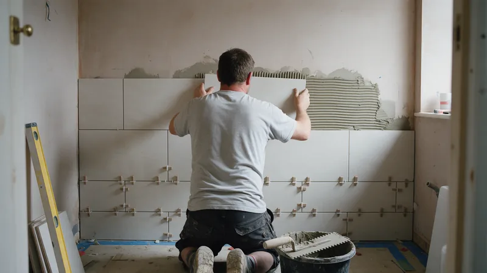
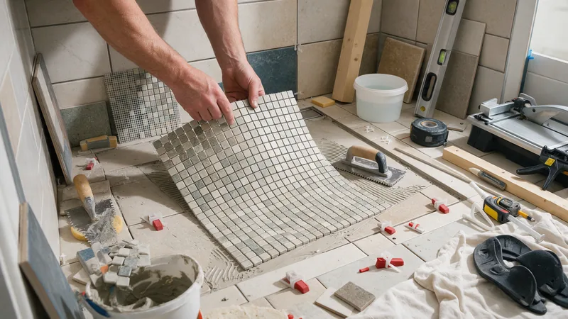
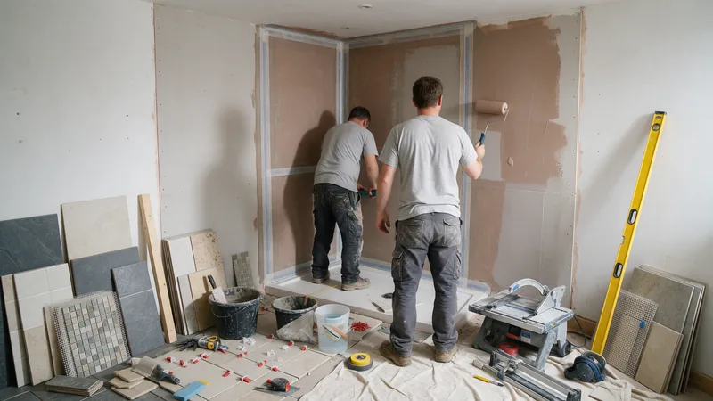
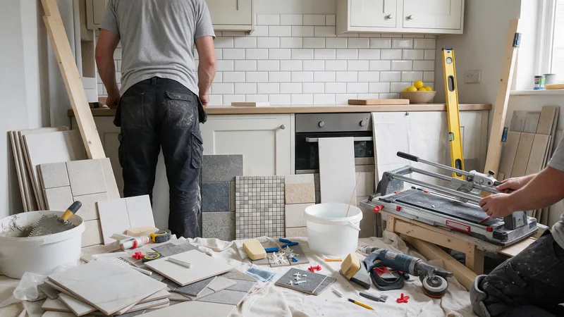
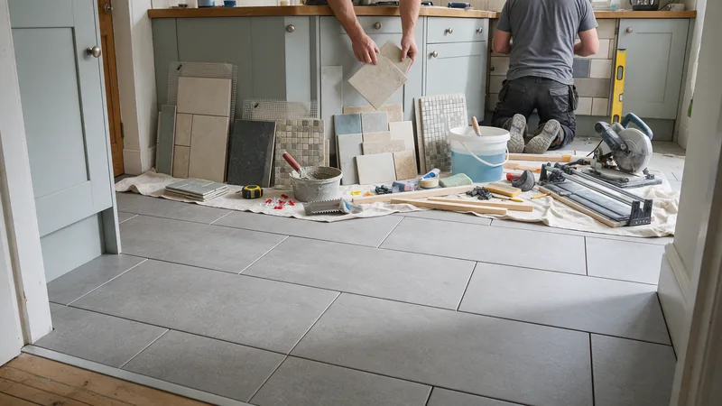
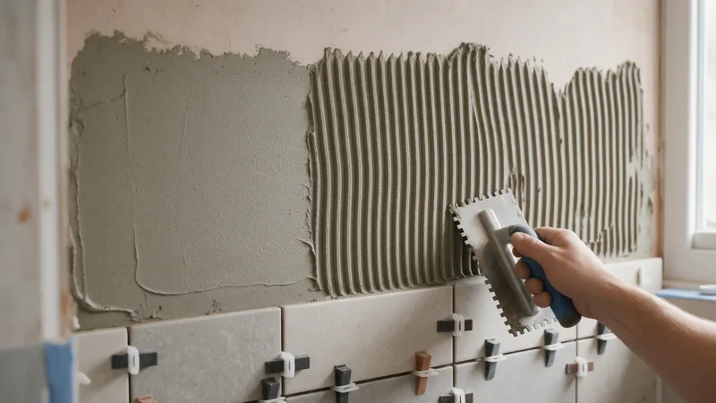
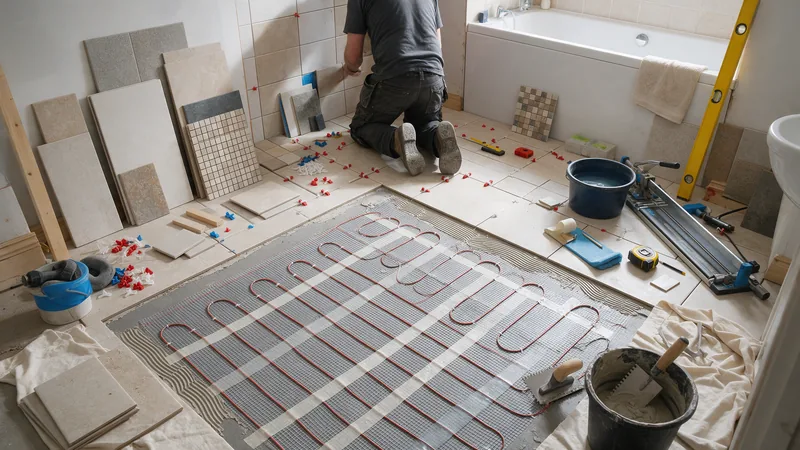
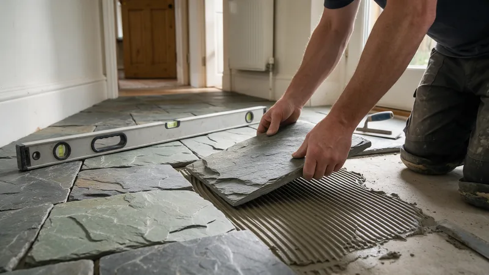

Our work
Sixteen sample jobs.
Tessgate is a demo, so none of these happened. They are the sort of jobs a tiler round here would actually have on over a month or two, with pictures generated for this site rather than taken on a job.
16 jobs

Generated photoHalf way up the wallKendal · Sample Generated photoA walk in, floor to ceilingWindermere · Sample
Generated photoA walk in, floor to ceilingWindermere · Sample Generated photoWalls and floor in one goUlverston · Sample
Generated photoWalls and floor in one goUlverston · Sample
Generated photoMosaic, following the fallKendal · Sample
Generated photoWaterproofed before a tile went near itGrange-over-Sands · Sample
Generated photoA splashback in brick bondKirkby Lonsdale · Sample
Generated photoCuts following the unitsKendal · Sample Generated photoTwo pairs of hands and a frameWindermere · Sample
Generated photoTwo pairs of hands and a frameWindermere · Sample
Generated photoCombed out, clips inUlverston · Sample
Generated photoHeating in, membrane downKendal · Sample
Generated photoRiven slate in a hallwayKirkby Lonsdale · Sample Generated photoFour tiles, four different jobsKendal · Sample
Generated photoFour tiles, four different jobsKendal · Sample Generated photoFalling away from the houseGrange-over-Sands · Sample
Generated photoFalling away from the houseGrange-over-Sands · Sample Generated photoCutting wet, out the backWindermere · Sample
Generated photoCutting wet, out the backWindermere · Sample Generated photoOld grout raked right outUlverston · Sample
Generated photoOld grout raked right outUlverston · Sample Generated photoThe corner sealed, not groutedKendal · Sample
Generated photoThe corner sealed, not groutedKendal · SampleFilter them, or tap one for the detail. Every one is a made up sample.
What you are looking at
Why a real tiler should photograph the middle of the job.
Every tiler's website shows the same picture: a finished bathroom, taken on a phone from the doorway on the last afternoon. They all look the same, and not one of them tells you whether the firm waterproofed anything.
The pictures that win work come from the middle of the week. The wall stripped back with the old adhesive still on it. The waterproofing on, with the corners taped, before a single tile went near it. The chalk line and the batten, with tiles dry laid along the floor to show where the cuts would land. A floor with the membrane down and the heating taped to it. The levelling clips still standing in the joints. On a real site this page would be your own photographs of exactly that, with one line each on what the wall turned out to be hiding, and it would be the page that beats the firm who only photographs the last hour.
 Generated photo
Generated photoGenerated for this demo.
Want somebody to look at yours?
Tell us the room and your postcode and we will come and put a straightedge on it.